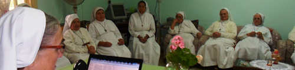
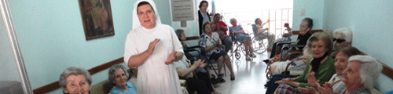

-

Sitio en construcción, disculpe las molestias
-

Sitio en construcción, disculpe las molestias
-

Sitio en construcción, disculpe las molestias
-

Sitio en construcción, disculpe las molestias
-

Sitio en construcción, disculpe las molestias

MADRE FUNDADORA
- Introducción
- Su niñez
- Su adolescencia y juventud. La Vocación
- Su edad madura. La fundación y dirección de la Congregación
- Hacia la vuelta al Padre
- Beatificación
- Sólo para mujeres fenomenales
Introducción
María Petkovic, fue una mujer profundamente enamorada de Dios, sensible a las necesidades de su pueblo, compasiva con los niños huérfanos y abandonados, con los más pobres, los ancianos solos y con todos los que sufren. Anunciaba la Buena Noticia del Evangelio con energía, amor y talento.
De joven, dirigía diversas asociaciones espirituales y caritativas. Se dedicaba pacientemente a la enseñanza escolar y a la educación en la fe de los niños y de los más pobres. Pronto optó por el carisma franciscano de misericordia y humildad.
En el año 1920 fundó la Congregación "Hijas de la Misericordia de la Tercera Orden Regular de San Francisco" para dar testimonio del amor misericordioso de Dios Padre, especialmente hacia los que sufren, los pobres, los ancianos y los niños abandonados en la sociedad. Su vida y su obra quedaron como un don de auténtico amor Dios y a la humanidad y como un punto de encuentro de Dios con el hombre que descubre a su Padre y lo ama.
Esta familia religiosa que realiza su misión en varios países del mundo, en 1936 llegó y se quedó en nuestra Patria Argentina.
Su niñez
María Petkovic nació el sábado 10 de diciembre de 1892 en la ciudad de Blato, perteneciente a la isla Korcula de Croacia. La mencionada ciudad era el centro más importante de la isla, contaba en ese entonces con cerca de 10.000 habitantes y era considerada una zona agrícola donde la mayor parte de las tierras estaban en poder de unas pocas familias adineradas, una de las cuales eran los Petkovic Kovac.
Blato, ciudad natal de María Petkovic
Según cuenta María en su autobiografía, en la tierra de sus padres trabajaban muchos cientos de aparceros.
Su padre Antonio Petkovic Kovac, al enviudar de la primera esposa, se casó nuevamente con María Marinovic.
De la primera tuvo dos hijas: Elena y Catalina y de la segunda, once hijos de los cuales tres fallecieron siendo muy pequeños. Por lo tanto en la familia crecieron 10 hijos: seis mujeres y cuatro varones, María es la sexta del segundo matrimonio. Fue bautizada a los doce días de su nacimiento el 22 de diciembre de 1892 en la única parroquia que existe en Blato hasta el día de hoy denominada de “Todos los Santos” y que se encuentra a 50 metros de la casa de María.

Parroquia de Blato
Según María, su padre practicaba en alto grado la justicia, el amor y la misericordia. Era un hombre de fe y oración, constante en el cumplimiento de los mandamientos de Dios y de la Iglesia. Amaba a sus trabajadores y a los pobres, se interesaba por ellos proporcionándoles lo que necesitaban. Era callado, tranquilo y de pocas palabras. Ella lo amaba a tal punto de convertirlo en su ideal de vida después de Jesús.
Antonio Petkovic y María Marinovi
Falleció en 1911 cuando María tenía 18 años. Su madre era una mujer piadosa, que educaba a sus hijos en el amor a Dios, en la disciplina y en las virtudes de la sencillez, de la humildad, de la abnegación y del trabajo.
“De esta manera, María creció constantemente en la escuela de las virtudes cristianas y de la caridad, donde su espíritu recibió las primeras impresiones de amor hacia Dios y hacia el prójimo” (“Por amor del Señor". Pág.16. Autobiografía"). Su madre sobrevivió varias décadas a su esposo y fue testigo de la entrada de María en el convento, a lo que se conformó no tanto porque fuera su voluntad, sino por aceptar la de Dios.
María estaba dotada de dones y talentos naturales visibles en ella desde muy pequeña. Familiares y vecinos admiraban su amabilidad, sus cualidades morales, su belleza física (cabellos dorados, ojos celestes, grandes y puros). A medida que iba creciendo, se manifestaba más compasiva, comprensiva y sociable. Era cariñosa y maternal con los niños especialmente si eran huérfanos. La pobreza del prójimo le repercutía en el corazón y se le grababa profundamente en su memoria.
No habiendo cumplido aún los cinco años, debido a su extraordinaria inteligencia, comenzó la escuela elemental como oyente, ya que en ese entonces no existía aún el Jardín de Infantes.
La escuela funcionaba en un edificio de sus padres. Muy pronto comenzó a leer, a escribir y hacer cuentas adelantándose a sus compañeritos. Al año siguiente accedió al segundo grado de la escuela elemental y recibió el Sacramento de la Confirmación a los 6 años encontrándose por vez primera con el joven Obispo de Dubrovnik Monseñor José Marcelic quien sería su confesor y guía espiritual. Durante los dos últimos años de la escuela elemental, María tenía además una maestra particular que le daba lecciones de literatura.
Así a los 11 años terminó el sexto y último año primario con excelentes calificaciones y con una edad inferior al que corresponde. Cuando ella tenía 9 años, cuenta en su autobiografía, comenzó a sentir deseos de ser educada en un colegio religioso para servir al Señor. Recién en 1904 llegarán a su pueblo natal unas religiosas llamadas “Siervas de la Caridad”, quienes al establecer allí un colegio, darán a María la oportunidad de cursar con ellas la escuela media.
“En su casa, desde los primeros días de su vida hasta cuando se separó de la familia, venían a menudo, casi semanalmente y por largos periodos, frailes franciscanos, dominicos y también de otras Ordenes religiosas, y ello porque en el pasado, el difunto abuelo Francisco...había reservado para los padres dos o tres habitaciones en su propia casa, a fin de que se encontrasen bien como en su propio convento. (“Por amor al Señor". Pág.16-17. Autobiografía)
“María pertenecía a la familia más rica de la región, sin embargo, no sentía ninguna satisfacción de poseer una casa grande y cómoda, buena comida y excelentes muebles; deseaba más bien tener una casita cualquiera; le gustaba la vajilla de madera, como la de sus vecinos pobres. Con solo cuatro años, iba donde ellos, observaba incrédula su pobreza y al mismo tiempo experimentaba un gran deseo de vivir en una casa así, y de tener solamente las pocas cosas necesarias. Quería comer la polenta junto con ellos en una única olla negra y beber de una única escudilla de madera, que servía a todos y para todos” ("Por amor del Señor". Pág.19. Autobiografía)
“A los cinco o seis años ...aquella noche...mirando hacia el cielo la cara iluminada de la luna, mientras la tía recitaba el Credo, me sentía tan inmersa en Dios que no lograba pronunciar en voz alta las palabras del Credo porque ya, como en una realidad, percibía y contemplaba al Padre celestial, el que todo abarca, y pensaba dentro de mi ¿por qué se dice “creo en Dios Padre”? ¿Acaso se puede dudar de su existencia?, y yo le decía así ¡oh Dios mío, Tú solo eres y nos sostienes! ¡Tú eres el Sumo!. En aquel instante contemplé a Dios que extendía los brazos hacia mí y al mismo tiempo encerraba en sí a mí y a todo el resto, sosteniendo y abrazando al universo...” ("Por amor al Señor". Pág.21. Autobiografía)
“Durante el primer año escolar...se enfermó gravemente con hemorragias en diversas partes del cuerpo: ojos, oídos, etc. María observaba con cuánto estupor todos se interrogaban, incluso el médico sobre qué podría ser aquella enfermedad... Le sobrevino además fuertes dolores articulares y transcurrieron dos o tres meses en grave estado...” ("Por amor del Señor". Pág.24. Autobiografía) Desde entonces María por el resto de su vida experimentará frecuentes dolores en las piernas y mientras otras niñas se divertían jugando y saltando, ella no podía correr. Para evitar que los demás se dieran cuenta de su dolor ella se escondía. Dice en su autobiografía “El Señor lo permitió y la escogió de antemano para sufrir desde la infancia”

María Petkovic a los 12 años
En los primeros años de infancia la llevaban a jugar con una primita en una ciudad vecina, también Jelica Bosnic era su compañerita de juegos en su pueblo; más adelante su madre no la dejaba ir más que a la escuela y a la iglesia y solo permitió a una compañera de 4to. año, Bebica Carevic que la visitase en su casa. Sus padres eran muy severos en la protección de sus hijos.
Su adolescencia y juventud. La Vocación

María Petkovic - Su Adolescencia
Al terminar la escuela primaria, María deseó poder ingresar en algún colegio. En Korcula, las religiosas Dominicas habían abierto un colegio y los padres de algunas de sus compañeras las habían enviado allí para continuar sus estudios, porque en Blato no había una escuela media. María estaba triste al ver a las demás ir al colegio, mientras que a ella no le era permitido aunque el estudio le gustaba mucho.
Su padre don Antonio temía perderla como a la hija mayor que se hizo religiosa y por eso decidió no mandar más a ninguna de sus hijas a estudiar en los colegios por miedo a que se hicieran religiosas. Al término de la escuela primaria los hijos varones continuaban los estudios superiores en Viena o Zagreb, mientras que las mujeres debían dedicarse a la música o a la costura y al estudio privado en casa. Esta decisión le cortaba las alas a María que sufría en silencio porque amaba a su padre.
Una vez hizo algo muy agradable y él, que también la quería mucho, le dijo: «¡Pídeme lo que quieras y te lo daré!». Entonces le dijo: «Papá, ¡déjame ir al colegio!». El padre le dijo: «¿Tienes realmente ganas de dejar a tu padre?». María insistió: «¡Déjame ir al menos por un tiempo, para que pueda estudiar y educarme como las demás, a quienes sus padres han dejado ir!». «Sí, María, pero a ti el colegio no te sirve». Ella insistía: «Pero soy yo quien quiere ir; ¡por favor, déjame!». Su padre le replicó: «¿Serías capaz de irte y dejarme después que he puesto en ti mis esperanzas de consuelo y sostén?». Ante estas palabras, María no volvió a insistir.
Después de pocos meses, llegaron a Blato las Hermanas Siervas de la Caridad, y abrieron una escuela para niños y para las jóvenes que habían cursado los estudios primarios abrieron la escuela media. Don Antonio, entonces, permitió a María que fuese a clases, pero no que habitara con ellas. Debía volver regularmente a casa. Allí cursó la escuela media y aprendió también italiano y bordado. Así, María recibió una buena educación y tuvo la posibilidad de observar de cerca la vida religiosa por la que comenzaba a sentirse atraída.
En aquel tiempo, los niños no eran admitidos a la primera comunión antes de los doce o trece años, de modo que María tuvo que esperar sus doce años, luego de que su mamá le diera su consentimiento.
Desde hacía tiempo, María tenía un fuerte deseo de Jesús y de conocer las cosas sagradas, por eso estaba muy contenta al saber que podía ir al catecismo directamente con el párroco, Don Pedro. La alegría de María, duró poco porque su madre, decidió no enviarla al catecismo junto con los demás niños, sino hacerla estudiar en casa, y enviarla solamente la última semana, para que el párroco la examinara. Esto destrozó su corazón y todas sus expectativas y sueños. María no respondió, pero no sabía cuál era la razón: ¿Tal vez su mamá quería que comenzara a distinguirse de aquellos niños pobres y traviesos que antes del catecismo corrían por la plaza?. Su casa se encontraba a pocos metros de la iglesia y cuando oía a los niños, corría a la ventana para verlos y cuando al mediodía salía para comprar el pan, al pasar cerca de la iglesia oía las voces de los niños y del sacerdote, y se decía: «¡Qué felices son estos niños! ¡Si fuese pobre, yo también tendría esta suerte de asistir y escuchar la enseñanza para la comunión!».
Un día tuvo que tragarse una severa llamada de atención de parte de Sor Desideria que ignoraba la situación de María, por su ausencia del catecismo. La religiosa la acusaba de ser soberbia porque no asistía junto con los demás. María nada dijo para justificarse, le besó el crucifijo de la hermana y se fue a llorar su pena, a un lugar remoto de su enorme casa.
Finalmente llegó aquella feliz y tan esperada última semana que precedía a la primera comunión. María contaba con el hecho de poder, al menos en aquellos pocos días, escuchar las lecciones del párroco, pero su madre, el primer día, la amonestó severamente para que se hiciera interrogar de inmediato por el párroco. Para este fin debía sentarse en la primera fila con el objeto de hacerse notar por él. Ubicarse en el primer banco delante del sacerdote era señal de que uno se sentía preparado para el examen. María sabía que a los demás niños se les había enseñado el catecismo con "ejemplos prácticos", mientras que ella había estudiado las fórmulas de la doctrina y temía que este hecho la habría expuesto al ridículo, pero no se le pasó por la mente desobedecer a su mamá. A su llegada delante de la iglesia, de inmediato fue rodeada por los demás niños quienes la miraron de un modo extraño porque tenía en las manos el libro del catecismo. Permaneció tranquila y se fue derecho a la iglesia, sentándose en la primera fila, como se le había ordenado. El sacerdote comenzó a interrogarla siguiendo el método de los "ejemplos prácticos" utilizados por él, mientras que María le respondía siguiendo cuanto había aprendido del libro. El párroco quiso ver su libro y le dijo: «Eres una niña inteligente; te daré este libro de 'explicaciones prácticas' y tú, en estos dos o tres días, lo estudiarás para que completes tus conocimientos». Ella se sintió muy feliz y se preparó con gran recogimiento para la primera comunión.
Llegó el día tan esperado y que recordaría durante toda su vida, porque desde aquel momento ardía en ella cada vez más el amor por Jesús.
Leía de buena gana la vida de los santos. De una manera particular, le entusiasmaban las palabras de Jesús contenidas en el santo Evangelio. En su habitación había hecho un altar donde había colocado un cuadro con la imagen del Sagrado Corazón, tomado de la habitación de su madre. Todas las mañanas se levantaba temprano, antes que su familia para rezar, luego iba a la parroquia para escuchar la Misa y recibir la Eucaristía y por la tarde se encargaba de la hora de Adoración porque pasó a integrar la asociación de las Hijas de María y del Buen Pastor, conociendo a tantas otras jóvenes con quienes compartir el camino de amor hacia el Señor.
Un día de marzo de 1906, después de la Comunión, María se quedó un tiempo más largo en la iglesia para orar. De improviso sintió un malestar físico y regresó a su casa encontrando a su madre agitada por el mucho trabajo y le dijo: «¡Mamá, ahora yo me encargo de todo!». Luego de terminar las tareas, cayó muy enferma. Estuvo tan mal que todos, incluidos los médicos, pensaron que no tenía remedio, que se iba a morir al punto que llamaron a un sacerdote para confesarla. A un sacerdote que se hospedaba en la casa le dijo que tenía tantos deseos de ingresar a un convento y se estaba muriendo sin siquiera haber conocido uno. En medio de su gravedad con mucha fe tomó agua de Lourdes que tenía en la mesita de luz, se sintió mejor y se durmió amaneciendo bien. Después de veintiún días, la enfermedad había cesado. Librándose milagrosamente de la muerte, María comenzó a no interesarse más ni por los juegos ni por las compañeras. Se había vuelto muy pensativa y una melancolía inexplicable le ocasionaba mucha tristeza en el corazón. La búsqueda de la soledad se iba transformando en ella en deseo de ingresar a un convento. Leía libros espirituales que le daba el párroco, y buenos libros de literatura que le proporcionaban sus hermanas. Un día, mientras ponía en orden la habitación de los sacerdotes que se hospedaban en su casa, halló sobre la mesa una biografía de Santa Rosa de Lima y se puso a leerla sintiéndose invadida de una gran alegría y emoción al descubrir en aquella santa los mismos sentimientos que llenaban su espíritu. Desde entonces la tomó por amiga espiritual y llevó su imagen siempre consigo.
Los domingos, cuando su mamá acompañaba a sus hermanas a pasear, pedía quedarse en casa con su hermanita Milka. Sus hermanas y hermanos, al ver su comportamiento un poco extraño, retirado, hacían de todo para distraerla, pero surtía el efecto contrario: María se aislaba cada vez más. Un día, con su hermano Iván, fue a Babina, a su casa de vacaciones que estaba a orillas del mar. Se pusieron en camino por la mañana muy temprano, en el momento en que los primeros rayos del sol caían, María observaba atónita aquel espectáculo pensando: “esas delicadas gotas de rocío que ondeaban con la caricia del viento, si tienen la fortuna de permanecer en las hojas, el sol las atraerá, transportándolas a las alturas para hundirlas en sí”. Le pareció que también su vida habría podido orientarse en ese sentido. Entonces, dijo a su hermano: «Iván, ¡mira esas gotas de rocío en las hojas! ¡Con ellas comparo mi vida! ¡Sí, mi vida se parece a ellas! Si el viento sacudiese las hojas del Espíritu, podría caer por tierra y le faltaría ese maravilloso brillo de la candidez; mi vida espiritual se rompería sobre el terreno. En cambio, si permanezco firme en mi puesto, puedo ser atraída por el sol del amor divino, me sumergiría en Él y en Él viviría por la eternidad». En Babina hacía largos y silenciosos paseos con Iván a la orilla del mar y se quedaba sola muchas veces y aprovechaba para sumergirse en sus pensamientos, observar el cielo y el mar, contemplar a Dios al que anhelaba. Su hermano un día le dijo: «Sabes María, estoy contento contigo, pero me temo que terminarás en un convento».

Monseñor Jose Marcelic
En septiembre de 1906, con ocasión de la visita pastoral del Mons. José Marcelic, obispo de Dubrovnik. María lo conoció teniendo la posibilidad de hablar en privado con él, le confesó su deseo de ingresar a un convento y de consagrar su vida a Dios; el Obispo le puso la mano sobre la cabeza y la bendijo. Desde entonces Mons. Marcelic comenzó a guiarla espiritualmente por correspondencia y le ordenó tener un diario espiritual, anotar todo lo que le sucedía, lo que hacía, lo que experimentaba y lo que pensaba. Su vocación, se consolidó sobre todo con las palabras que Jesús dijo al joven: «Si quieres ser perfecto, ve, vende todo lo que tienes, deja todo, niégate a ti mismo, luego ven y sígueme» (Mt 19,21). María se puso, entonces, a observar a sus hermanas amadas por sus maridos y su vida cómoda. Veía a las compañeras galantear. Se daba cuenta de cuanto bienestar se gozaba en su propia casa. Gozaba del afecto de sus hermanos, del amor especial de su padre. Un joven pretendiente se había presentado con cartas de petición de matrimonio, declarando que la habría esperado hasta que cumpliera la edad justa, aunque tuviera que esperar diez años. La voz de Jesús, le llegaba misteriosamente a sus oídos: «Si quieres, deja todo, ven y sígueme», entendía ser libre para escoger, esta condición de amable libertad fue la que tocó y atrajo totalmente su corazón. Jesús la conquistó; la embelesó desde la Cruz: sus llagas la obtuvieron como esposa. El 21 de noviembre de 1906 hizo «su promesa de amor a su Señor, su voto de amor eterno».
María iba a Babina, permaneciendo allí un par de meses. Las primeras veces iba con su padre quien durante el viaje permanecía callado porque rezaba el rosario, también durante la permanencia en Babina, habitualmente era silencioso, a veces se sentaba a su lado y le leía algo, mientras ella hacía labores. Fue allí donde María pudo tocar de cerca la gran bondad y piedad de su padre para con las familias pobres del lugar, que él con su tío Don Marcos habían instalado allí, construyéndoles pequeñas casas. Apenas llegaba, lo primero que hacía era enviar a cada familia, a través de María, alguna ayuda.
La primera vez, María objetó que era justo preparar primero su almuerzo y después pensar en aquella gente. Su papá le dijo: «¡No, primero están los pobres!». Cada día reunía a los niños y les distribuía galletas. Al atardecer, les enseñaba el catecismo y las lecciones escolares. Cuando María llevó a doce de ellos a Blato para la primera comunión, permanecían mudos y turbados ante la belleza de la iglesia parroquial de Todos los Santos, y se comportaban hasta el punto que no pasaron inadvertidos.
En abril de 1911 falleció Antonio, su amadísimo padre en quien siempre encontraba comprensión, luego la vida para María se volvió más difícil. En particular, su madre llegó incluso a perseguirla a causa de su rechazo de tantas y excelentes propuestas de matrimonio. En efecto, unos nueve ricos pretendientes la habían pedido en matrimonio. A siete de estos no fue difícil rechazarlos, les decía que habían llegado ¡tarde, porque ya se había comprometido!, o que no tenía intención de casarse. Algunos se sirvieron incluso de la intervención del obispo para que los recomendara y dijese alguna palabra para convencerla, seguros de que ella, como persona devota, habría escuchado su consejo. Pero el obispo les respondía: «¡Dejen en paz a esa joven!». En particular con dos fue bastante dura la situación, porque muchos se habían interpuesto, comenzando por su madre, y luego sus cuñados, hermanos, etc. Su madre le suplicaba que no tirara por la ventana la posibilidad de ser rica y feliz. Pero visto que María no la escuchaba, comenzó a reprenderla y a herirla. Una vez, contestó: «Y bien, si ese sujeto es tan bueno, adóptenlo ustedes y quédense con él, déjenme a mí ir por mi camino, porque de esta manera me quitan la vida: ¡así no puedo vivir!». Ella comenzó a adelgazar y decaer, entonces, los hermanos y los cuñados quisieron hacerla viajar para que se distrajera y se despertara en ella algún interés por la vida mundana. María tuvo que luchar contra todos sus parientes juntos. Fueron pruebas tremendas, todavía más agudas por el hecho de que no podía expresar su decisión por miedo del contragolpe, ¿qué podía hacer, pobrecita? Ya estaba firme en su decisión; aún más, estaba ligada por una promesa perpetua y día tras día esperaba el mejor momento para irse a algún convento, pero al no ser mayor de edad, no podía hacerlo sin permiso.
Se hundió en una tristeza de ánimo semejante a la muerte. Se sintió sola, sin ninguna ayuda, como si también Jesús la hubiese abandonado. En ese estado de profunda aflicción, deseaba desaparecer. Por una parte, no soportaba la idea de ser causa de pena para la vida de otros y por otra, quería ser libre para ir por su camino. Tenía que dar una respuesta decisiva y, por consiguiente, la espada habría atravesado los corazones de sus seres queridos. Al final, se sentó y escribió su respuesta: «¡No tengo intención de casarme!».
Al igual que su padre, María no simpatizaba con los ricos, parecía tener corazón solamente para los pobres, pero no era libre para ir junto a ellos, no podía visitarlos ni ayudarlos abiertamente, porque su madre la reprendía, le prohibía frecuentarlos. María no se atrevía a contradecirla. Decidió, huir para irse a un convento de clausura y perder definitivamente sus huellas. En uno de esos momentos de exaltación quemó todos sus apuntes espirituales, el diario e incluso las cartas que le había escrito el obispo. Se dirigió a su cuñado alcalde, quien, después de la muerte de su padre era su segundo tutor. Le dijo que si la querían bien, no debían atormentarla, porque no habrían obtenido otra cosa que debilitarla más; pero aunque débil, en secreto se iría a un convento de clausura.
Su familia se entristeció hasta las lágrimas y le rogaron que se quedara con ellos al menos otros cinco o seis años, porque sabían que serían llamados a las armas en vista de la guerra ya anunciada. La situación era que sobre la mamá y sobre María recaía el peso de la conducción administrativa del patrimonio familiar. La madre comenzó a organizar almuerzos especiales a los que invitaba a algunos huéspedes con la única finalidad de persuadir a María de que desistiera de su decisión. En una ocasión de éstas María dijo: «hay demasiados niños inteligentes y abandonados, que no tienen quien los eduque y les muestre la vida, y que, en cambio, podrían ser preparados para asumir compromisos a favor de la humanidad». «Estos me llaman para que les haga las veces de madre. ¡No estoy llamada a sacrificarme como madre de cinco o seis hijos, sino de centenares, de millares de niños abandonados!».
María, con la intención de irse secretamente lejos, al convento de clausura de las Clarisas, tramitó la cédula de identidad, pero su familia se las arregló para que la autoridad judicial vigilara el puerto de Prigradica y el de Vela Luka y así se desvanecieron todos sus planes. Mientras tanto, seguía debilitándose y perdiendo la salud; su madre decidió llevarla a un especialista en Split. Revisada por él dijo: «La joven sufre terriblemente; su corazón ya no tiene fuerzas, está muy débil, si no le conceden lo que desea, tengan la seguridad de que no vivirá más de dos meses!». La mamá se turbó mucho y volvió muy pensativa. María le dijo: «ya no puedo más, no sigan atormentándome con sus prohibiciones, dejen que me vaya en paz a un convento, ahora mismo. ¡Si no me dejan ir por las buenas, me iré igualmente y no me volverán a ver!». Asimismo el obispo de Split, donde la había llevado su madre, dijo: «¡Dejen que la joven se vaya en paz, si es lo que desea!». La madre trató de explicarle que María era débil y bastante sensible para una vida tan rígida como la del convento de clausura. Éste replicó que Jesús mismo da la fuerza necesaria al alma. La madre se arrepintió de haber acudido a él y se apresuró a irse.
Así, con la tristeza en el corazón, la acompañó al convento de las Siervas de la Caridad en Split. Ellas la recibieron como pensionista para recuperarse, mientras tanto estudiaba también el italiano y el alemán.
María, una vez más, se dirigió a Mons. Marcelic para pedir su consejo, escribiéndole que ya no podía contener más su vocación por un convento de clausura y que se estaba preparando para el viaje; pero, al mismo tiempo, era perseguida por una voz interior que le pedía sacrificarse quedándose en el mundo, alejándose de los suyos, como él mismo le había escrito. Y concluía: «por eso, desolada al ver la ceguera y las injusticias del mundo y tanta miseria, quiero irme a algún lugar solitario, donde, en silencio, llorar y dar la debida satisfacción al Señor». En espera de la respuesta, hizo una novena al Sagrado Corazón. Al término de la novena, llegó la carta del obispo Marcelic: «¿Tú, qué irías a hacer en un convento de clausura? ¿Qué quisieras hacer por la gloria de Dios y para ayudar a los necesitados? No tendrías la libertad para actuar, a lo sumo, quizá podrías poner o levantar la mesa, desperdiciando, así, sin un motivo específico, el tiempo precioso de tu vida y las capacidades que Dios te ha dado. En el convento de clausura tendrías una vida breve, como la de tu difunta hermana Sor Gertrudis. Tú dices que no puedes soportar tanta miseria, corrupción y engreimiento del mundo, y sufres porque no puedes ayudar; por eso quieres irte para poder llorar por estas miserias. Pero no está bien escapar y dejar la casa mientras está en llamas; ¡llorar por eso no es de héroes! Al contrario, hay que trabajar con todas las fuerzas posibles para apagar las llamas y salvar lo que se pueda. Te aconsejo, pues, que vuelvas y te comprometas con tu pueblo en la educación de las jóvenes. Con el tiempo podrás abrir una casa religiosa; pero cada cosa a su tiempo». María inmediatamente volvió a casa en espera de ulteriores directivas. Corría el año 1914 y la gran guerra mundial asolaba Europa sembrando muerte y miseria: viudas, huérfanos, hambre, enfermedades... Sobre este trasfondo se iba definiendo la vocación de María.
En septiembre de 1917, María recibió otra carta del obispo Marcelic, en la que le decía: «Todo está en tu buena voluntad, en eso debes ser completamente libre, debes decidir tú sola, libremente, luego estarás más tranquila y tendrás mayor mérito ante Dios. ¡Todo será solamente tuyo! Dios nos ama, respetando nuestra libertad, lo que hacemos espontáneamente le agrada más. Te digo lo que pienso y lo que deseo, pero la mía no es la última palabra. ¡Es necesario que decidas tú misma! Yo, por mi parte, quiero que te quedes en Blato, en el colegio de las Siervas de la Caridad, como una buena levadura; podrías hacer el bien por tu pueblo y, con el tiempo, fundar una Congregación religiosa, tomando a tu cargo la educación de las niñas más necesitadas, hay que hacer surgir los estratos más bajos de la sociedad. Si abren el comedor popular, podrías entrar con ellas como ayudante. De esta manera, quizá tu madre te daría permiso más fácilmente y después, cuando cumplas 24 años, con la mayoría de edad, podrás decidir sola, libremente. Pero tendrás que actuar con valentía. ¡Reflexionar sola ante Dios... y decidir! Es necesario que todo sea obra tuya».
María aceptó y acató este consejo. Decidió, pues, ir a habitar con las Siervas de la Caridad en calidad de ayudante en el comedor popular, donde, por lo demás, ya prestaba servicios en la administración, y diariamente hacía largas caminatas a pie para la distribución de bonos a la gente. Pensó que por esta razón, quizá su madre la dejaría ir de buena gana, al saber que no se iría para hacerse monja. Pero su mamá se opuso enérgicamente, por el hecho que se habría encontrado completamente sola en la administración de las propiedades y las Siervas de la Caridad no tenían lugar, porque aún no habían terminado la edificación. Así, con todos estos impedimentos, tuvo que esperar hasta el 25 de marzo de 1919.
Su edad madura. La fundación y dirección de la Congregación
María Petkovic - Su Madurez
La fundación de la Congregación
Habiendo María sobrevivido a la terrible epidemia conocida como «española», que siguió a la guerra, renacida luego de una enfermedad mortal, reconoció en un sueño a quien sería una hermana suya y gran colaboradora: María Telenta, la futura Sor Gabriela. En efecto, una mañana María Telenta había ido a la iglesia. El párroco, Don Pedro, le había pedido que fuera a ver si María aún vivía y que volviera a decírselo. Cuando María la vio, alargó los brazos, diciendo: «¡Oh, si tú supieras!... Tú eres mi hermana!». Y no lograba decirle otra cosa debido a que su lengua estaba todavía hinchada, lo que no le permitía hablar libremente, pero quiso abrazarla y besarla, repitiéndole: «¡Tú eres mi hermana, mi hermana!».
María Telenta creyó que estaba delirando y se puso a acariciarla, diciéndole: "¡Cálmese, señorita María!», mientras que María seguía diciéndole: "¡si tú supieras...!». María Telenta apenas conocía a María Petkovic hasta entonces, pero, a veces, en la iglesia, fijando la mirada sobre ella, tenía la sensación de que algún día le habría sido de ayuda. Y se preguntaba qué ayuda habría podido brindar a una Petkovic.
A menos de dos meses de la grave enfermedad, todavía débil, María quiso trasladarse a Babina (era comienzos de febrero de 1919) para reanudar y llevar a término la enseñanza a los niños. Un día, que volvió a Blato para confesarse y comulgar, para recoger libros espirituales, material y libros didácticos para la escuela, había pasado a ver a su hermana Ivica. Cuando se dio cuenta que María estaba por volver a Babina sola, Ivica la reprendió, diciéndole: «¡Es impensable que una mujer esté sola en ese lugar tan aislado!». Y le «impuso» que llevase consigo a una joven, una modista, que estaba con ella. ¡Esa costurera era María Telenta! Si bien María estaba deseosa de conocer mejor a la Telenta, hubiese preferido ir sola, temiendo ser disturbada en su soledad y en el recogimiento espiritual que buscaba en Babina. Pero su hermana no quiso oír razones y a María no le quedó otra opción. En tanto Ivica había recomendado a la Telenta que distrajera un poco a María, porque la veía demasiado retirada y pensativa, y temía por su salud, considerando lo acaecido anteriormente.
De este modo se conocieron mejor y experimentaron la convivencia. La modista aseaba la casa y preparaba lo necesario mientras María se ocupaba de la escuela, de su lectura espiritual o la meditación. María Petkovic, había hecho un horario de tipo monástico que observaban escrupulosamente y que incluía momentos de expansión. La experiencia resultó muy positiva y cimentó su vinculación. Mientras tanto llegó el día tan anhelado.
El 25 de marzo de 1919 María dejó la casa de sus padres para retirarse a la Casa de las Siervas de la Caridad. En esta opción suya la siguió María Telenta. Las Siervas de la Caridad las acogieron como pensionistas. Mientras estaba a la espera de conocer la voluntad del Señor sobre ella, María desarrollaba las actividades de apostolado, guiaba las asociaciones católicas y se ocupaba de los niños pequeños. Estaba empeñada sobre todo en la conducción del comedor popular para cerca de 3.000 personas a las que distribuía los bonos para el retiro de los alimentos. Al ser una pensionista, podía salir libremente para visitar a las personas indigentes a las que su madre no se lo había permitido. A los dos meses del ingreso de las pensionistas, inesperadamente falleció la Superiora de las Siervas de la Caridad y en pocos días las restantes dos hermanas, ya ancianas, y una administradora regresaron a Italia, a su Casa Madre en Brescia.
En aquella época, Italia había ocupado Dalmacia (zona donde se encontraba Blato) y las relaciones no eran buenas, por eso las hermanas se habían dado cuenta que era mejor irse, confiando la Casa y el Asilo Infantil a María Petkovic. Así, María Petkovic y María Telenta comenzaron a hacerse cargo de las actividades: el colegio, el asilo y el comedor popular. Mons. Marcelic no hizo esperar su voz y su consejo iluminado en aquellos días particulares. En julio de 1919, escribió: «Si en el mundo todo sucede según un designio de Dios, ¡esta es su voluntad! La Providencia divina gobierna el universo y cada cosa que sucede en el mundo. El ojo de Dios ve todo, el bien y el mal. Si las Siervas de la Caridad dejan Blato, yo deseo y, luego de haber rezado a Dios, he llegado a la conclusión que tú [María Petkovic] permanezcas en la casa como superiora junto con las demás que ya están contigo y que lleven adelante el colegio como mejor puedan, bajo mi dirección y la del párroco. Tú misma, varias veces, me has manifestado el deseo de ofrecerte a ti misma y tus bienes a favor de tus compueblanos de Blato. He aquí la ocasión. ¡Esta es la voluntad de Dios! Pongámonos solos de pie. Encomiéndense a Dios y acepten la cosa tranquilamente».
Como se puede advertir, el obispo habla ya de «las demás que ya están contigo», por tanto, no sólo de la Telenta. En efecto, se habían presentado a María dos jóvenes que deseaban unirse a ellas. La primera de las dos era Palma Bacic Fratric (la futura Sor Catalina) y la segunda Magdalena Šeparovic (que será Sor Vicenta). María, les había dicho que, por el momento, podían ayudar durante el día en el comedor popular, pero por la tarde debían volver a sus casas. Y prontamente había informado a Mons. Marcelic.
Después de haber leído la respuesta del obispo, María advirtió con claridad la voluntad de Señor, y en ese instante sintió todo el peso y la importancia de dar inicio a la nueva Congregación religiosa y llamando a Palma Bacic y a Magdalena Šeparovic, les dio a conocer la decisión del obispo, y las invitó a decidir libremente si quedarse con ella en Blato para fundar una nueva asociación, o bien de irse a alguna Congregación ya constituida; ellas se quedaron con María. Ella se dirigió así a Dios: «¡Heme aquí, Señor; me entrego totalmente a ti; estoy dispuesta a cumplir tu voluntad sacrificándome por ti y por los necesitados (aunque no conozca mi futuro), con tal que tú mismo, Señor y Esposo nuestro, prepares todo. Entonces yo obedeceré y vendré; me sacrificaré con todo mi corazón por ti y por tus hijos; seré como una sirvienta a tu servicio, para cumplir tu voluntad!». Le dijo también a Jesús que el Esposo debe procurar todas las cosas, preparar la casa, la habitación y pensar en su manutención; mientras que la esposa tiene el cometido de tener hijos y velar para que en la familia reine el amor. Magdalena Šeparovic y Palma Bacic y María Telenta, entrecruzando sus brazos formaron un círculo colocando a María en el centro, y desde ese momento la llamaron «Madre». Incluso la gente, espontáneamente, comenzó a llamarla «Reverenda Madre», si bien no vistiese aún el hábito religioso.
Así, las cuatro jóvenes a partir del mes de agosto de 1919 cuando se retiraron definitivamente las Siervas de la Caridad, comenzaron la vida en común, elaboraron un horario y asignaron las tareas u oficios: María Petkovic guiaría la comunidad, el asilo infantil y la escuela de las niñas; María Telenta con su oficio de modista trabajaría para los externos y con ese trabajo contribuiría parcialmente al mantenimiento de la comunidad; Magdalena Šeparovic y Palma Bacic, ayudadas por militares, trabajarían en el comedor popular.
Monseñor Marcelic le escribió: «Me alegra que me hayas obedecido y te hayas quedado en el lugar con tus compañeras. ¡Cada cosa, por grande que sea, comienza con lo pequeño! Recuerda el grano de mostaza del Evangelio...». y sabiendo que era deseo de María ser asociada a la Orden Franciscana, le mandó la «Pequeña Regla» con estas recomendaciones: «Les envío la Regla general de la Tercera Orden Regular de San Francisco. Acepta la cosa seriamente aunque con la debida amabilidad y tranquilidad, según la voluntad de Dios. No temas las dificultades, especialmente las iniciales. Cada comienzo es duro. Prepárate para el empeño con generosidad. ¡A quien es generoso, el Señor lo sostiene! Solos somos poco o nada; pero en unión con Dios Omnipotente, también nosotros llegamos a ser poderosos. ¡Todo sea para la gloria de Dios! Antes de aceptar a alguna joven, abre bien los ojos; fíjate si está guiada solamente por la gloria de Dios, por la salvación suya y de las demás almas; si está dispuesta a la abnegación; si desea el bien de su pueblo; fíjate en su conducta y en su salud. Que todos las conozcan por sus buenas acciones, por su humildad, por su abnegación y sus sacrificios».
En poco tiempo la Obra comenzó a dar los primeros gérmenes: de acuerdo con el párroco, Don Pedro, se abrió un «Albergue diurno» y un «Jardín Infantil». Al comienzo, el Albergue lo llevaba adelante María, mientras que al año siguiente se hizo cargo la Šeparovic, hasta que llegó a la Congregación Margarita Radic (la futura Sor Buenaventura) quien, ayudada por otra maestra, tomó la dirección del asilo y del «Albergue diurno». Se acogieron también en el instituto las dos primeras niñas, huérfanas de padre y madre y sin parientes cercanos. Así se dio comienzo al orfanato. El año 1920 fue un año de gracia para María y su joven fundación. Ya se habían delineado las figuras claves: Mons. Marcelic asumió el papel de padre, educador y guía espiritual en la formación de María y de sus compañeras. María, como fundadora, era responsable de la espiritualidad, del apostolado, del Instituto y, al mismo tiempo, Madre de la comunidad.
El comienzo, como todo comienzo, fue heroico, para aquel manojo de mujeres enamoradas del Señor y de los hermanos: el amor por Jesús mitigaba y les daba fuerzas para resistir en las pruebas más duras. Cumplían alegremente las labores más pesadas por amor, se conformaban con el alimento más pobre, que no era ni nutritivo ni suficiente. Enfrentaban cualquier dificultad con el ánimo pronto al sacrificio y la abnegación apoyándose mutuamente en el crecimiento del grupo. Todas iban de buena gana a recoger la limosna para la manutención de la comunidad. Las familias más pudientes las ayudaban y ellas, por su parte, iban a visitar a los enfermos necesitados y, además de ayudarles materialmente, ejercían una misión instruyéndoles y confortándolos en sus dolores. Aquellas hermanas nutrían un gran amor y estima por su «Madre María» a la que obedecían fielmente. En este desarrollo tan fecundo de vida espiritual, la pequeña fraternidad iba poniendo poco a poco sus fundamentos con la bendición de Dios. No obstante, pues, la pobreza y los sacrificios, las vocaciones comenzaron a florecer y había necesidad de redactar un Reglamento. María recurrió a Mons. Marcelic quien le ordenó escribir ella misma las Constituciones a lo que María pidió que él preparara un borrador, porque ella se sentía incapaz. «¡No, no –le dijo Marcelic-, tú puedes y debes hacerlo! Toma como modelo las Reglas de las Ordenes antiguas y luego adáptalas a la vida y al trabajo de esa Congregación que tienes en mente, así como el Señor te inspira».
En agosto de 1920 se retiró a Prižba junto con María Telenta para escribir en la soledad, en el recogimiento y en la oración, las primeras Constituciones para la Congregación, aun sin nombre ni apellido. Comenzó a escribirlas al aire libre, en el bosque, a orillas del mar, sentada sobre una piedra, sola bajo el azul del cielo, en el nombre de Dios. «¡Todo sea en la caridad, en la sencillez y en la abnegación, trabajando y sacrificándose por los pobres y los huérfanos; por la difusión de la gloria y del amor de Dios por medio de la enseñanza a las asociaciones católicas y, a través de ellas, a sus familias, para que todos conozcan los propios deberes cristianos y amen a Dios nuestro Salvador!». Día tras día María pudo experimentar cómo el Señor no le hacía faltar su asistencia, y al termino presentándoselas a Monseñor Marcelic, éste le dijo después de haberlas examinado: «¡Viste! ¿Qué te había dicho?», "no tengo nada que objetar". No obstante, las hizo examinar por cuatro canonistas para ultimar formalmente la terminología técnica. Dio la primera aprobación el 15 de junio de 1923, y una segunda el 18 de junio de 1928, después de una puesta al día.
Mientras tanto Mons. José Marcelic, decidió que había llegado el momento de formalizar la nueva fundación que en el nombre de Jesús debía hacer tanto bien a los pobres, a los huérfanos, a los enfermos y marginados. Comunicó a María tal decisión a través del párroco, Don Pedro, recomendando preparar todo para la vestición religiosa. Para el hábito, por inspiración divina y consejo del obispo, María dio indicaciones sobre cómo debería ser y lo confeccionó, naturalmente, María Telenta y dado que después de la guerra la tela costaba mucho, el Señor la ayudó por medio de su hermana Kata, quien donó la tela para algunos hábitos, y el resto lo compraron. De acuerdo con el obispo, María invitó al Padre Mariano Stašic, superior de los franciscanos de Split, para que dirigiera los ejercicios espirituales. Mons. Marcelic pidió, entonces, al Padre Stašic que escogiera los nuevos nombres junto con las candidatas. Preguntó primero a María qué nombre quería. Ella respondió: «Me llamo María y como terciaria me llamo Magdalena, por eso quisiera quedarme con el mismo nombre». El Padre Stašic, en cambio, propuso María de Jesús Crucificado, nombre que en su interior deseaba y había rogado a Jesús, bañando con lágrimas su cruz, que le diese este nombre como signo de que la aceptaba como su esposa. Se continuó con la elección de los nombres para las demás candidatas, oyendo el parecer de María y de las interesadas. En cuanto al nombre de la Congregación, Monseñor interrogó a María, quien respondió sin titubear: «Se llamará Congregación de las Hijas de la Misericordia de la Tercera Orden de San Francisco, en cuanto que caridad y misericordia se asemejan. Es decir: 1) las Hermanas realizan actos de misericordia y actos de caridad por amor a Dios; 2) "Hijas" quiere decir algo que proviene del Padre; "hija de la misericordia", porque brota del Corazón misericordioso del Padre y realiza actos de su misma misericordia».
Cuando la gente supo que la vestición y la fundación de la nueva Congregación estaba próxima, conmovida y partícipe, se preocuparon por adornar de flores todo el pueblo y las callejuelas por donde pasarían las candidatas. Algunos hombres, durante la noche, habían cortado árboles de pino y las jóvenes habían preparado guirnaldas para embellecer la calle y los balcones. Moviéndose por la parte este del convento, pasarían por San Jerónimo hasta llegar a la iglesia parroquial de Todos los Santos. Se había pensado realizar la ceremonia en el día de San Francisco de Asís, por eso el 4 de octubre estaba todo preparado, pero debido a un imprevisto atraso del obispo, obligó a postergarla para el día siguiente. Sin embargo, por explícita orden del obispo, la fecha oficial e histórica de la vestición y de la fundación debía seguir siendo la fiesta de San Francisco. Y así fue. En la mañana, a las 5,00 hs. las campanas de la iglesia parroquial de Todos los Santos en Blato anunciaron festivamente que sus hijas, las hijas de su nación, estaban por dar vida a una nueva Congregación. Respondió la campana del convento, como la voz del Esposo que invitaba a las vírgenes a prepararse. Y ellas, gozosas y alegres, respondieron. Se vistieron de blanco; sus cabellos, que debían ser sacrificados a Dios, caían sueltos sobre los hombros. Sus cabezas estaban cubiertas de blancos velos y coronadas con guirnaldas de flores. Llegaron poco a poco sus padres, quienes abrazándolas les daban la bendición. Llegaron también las madrinas, que fueron las primeras y más calificadas viudas del pueblo; las «Hijas de María» y las integrantes de la Asociación del Ángel con sus estandartes. Cuando llegó el párroco, Don Pedro, María se arrodilló delante y le pidió la bendición, diciendo: «Desde este momento, yo, por intermedio suyo, me entrego en las manos de Jesús a mí misma y a mis Hermanas en Dios, para que usted sea para ellas padre y madre, ya que ellas dejan hoy definitivamente a sus propios padres naturales». A las ocho, las campanas repicaron de nuevo a fiesta y el cortejo se movió. Al frente había una niña vestida de blanco que llevaba la cruz del Salvador con otras dos de escoltas, también vestidas de blanco. Seguían las candidatas con sus madrinas, después los padres y los parientes. Acudió toda la población que formó dos filas a lo largo del trayecto. El ingreso principal de la iglesia parroquial estaba adornado de ramas verdes y tules blancos. Ahí estaba el Padre Mariano Stašic, vestido con los ornamentos sagrados, que las acompañó hasta el altar de Santa Vicenta, donde, con ornamentos pontificales, las esperaba Mons. José Marcelic, junto con un grupo de sacerdotes y clérigos.
La iglesia estaba llena de gente, tanto que algunos se habían subido al púlpito y otros a los confesionarios. Después de la homilía, el obispo realizó la ceremonia de vestición. Primero le correspondió a María, quien fue vestida por Monseñor, ayudado por los sacerdotes y por su madre. Don Vicko Bosnic recogió en una bandeja los mechones de cabellos cortados. El Padre Stašic tomó de las manos del obispo el cordón y se lo ciñó a su cintura. María, revestida con el hábito religioso, en su calidad de fundadora se colocó al lado del obispo y procedió a la vestición de las hermanas: María Telenta Vicio, Palma Bacic Fratric, Magdalena Šeparovic Buda, Jozica Franulovic Njalo y Anka Sladovic. Luego las nuevas novicias se intercambiaron un abrazo de Hermanas.
El 11 de octubre, Monseñor decidió admitir a las hermanas recién vestidas a los votos, de manera que se pudiera elegir el Consejo directivo de la nueva Congregación. La ceremonia se realizó delante del altar mayor, en presencia de toda la población de Blato. Sor María Petkovic, en primer lugar, se acercó al altar y emitió sus votos temporales. En este momento, el obispo se levantó y, vuelto hacia ella, dijo: «¡De ahora en adelante ya no te llamarás más María Petkovic Kovac, sino Sor María de Jesús Crucificado!». La emoción se extendió de la candidata a toda la gente que asistía a la ceremonia, y se repitió para cada una, mientras el obispo, después de pronunciados los votos, les daba el nuevo nombre: «Sor María Telenta, de ahora en adelante serás Sor María Gabriela del Buen Pastor, Sor Palma Bacic, serás Sor María Catalina de la Santísima Trinidad, Sor Magdalena Šeparovic Buda, serás Sor María Vicenta de las Llagas de Jesús, Sor Jozica Franulovic, serás Sor María Serafina de la Pasión de Jesús, Sor Anka Sladovic, de ahora en adelante te llamarás Sor María Josefa del Niño Jesús.
Jurídicamente ahora era posible celebrar, bajo la presidencia del obispo, el primer Capítulo general de las «Hijas de la Misericordia» y elegir al Consejo directivo. Sor María Petkovic fue elegida por unanimidad como Superiora general y Sor María Telenta como Vicaria. Mons. Marcelic pidió al Padre Mariano Stašic que leyera, en su nombre, el decreto de nombramiento de la Superiora General de la Congregación y después el de la Vicaria general. La nueva Congregación podía ahora actuar oficialmente, habiendo sido reconocida por el obispo de Dubrovnik (de «Derecho Diocesano»), con un gobierno propio.
El desarrollo de la Congregación
María Petkovic - La fundación
Si la guerra había ocasionado a Blato tantos huérfanos y tanto sufrimiento, después de la guerra no fue mejor, el alimento llegó a faltar del todo y, lo que era aún más trágico, ni siquiera se podía comprar en toda Dalmacia, porque simplemente no había. Entre la gente reinaba la pobreza y la indigencia, la desnutrición y las enfermedades. El recién nacido Instituto reflejaba también el ambiente reinante. La Madre María sufría sobre todo por los huérfanos, para los que no había comida suficiente, y no soportaba la idea de tener que echarlos a la calle. Las pobres viudas llevaban nuevos huérfanos y, llorando, pedían que los aceptaran, o bien, pedían al menos un pedazo de pan. La población hambrienta asediaba las puertas del Instituto con la esperanza de obtener algo, pero se necesitaba un milagro que transformara las piedras en pan. La Madre María decidió, entonces, ir a Eslavonia a pedir limosna y recoger un poco de víveres, porque un comerciante de esos lados le había dicho que allá habría encontrado. En agosto de 1922 junto con la Vicaria, Sor Gabriela Telenta, partieron para Eslavonia. Llegaron con la nave a Dubrovnik. Era necesario tener el permiso del obispo y las credenciales para los obispos de Eslavonia. Después, sirviéndose de un mapa carretero tomaron el camino de Metkovic para Slavonski Brod y desde allí, para Djakovo. Allí encontraron alojamiento con las Hermanas de la Santa Cruz, quienes las acogieron con hospitalidad. Luego, en primer lugar fueron a saludar al obispo, Mons. Akšamovic, y le pidieron permiso para pedir limosna en su diócesis; él no sólo les dio su bendición sino que fue el primero en subscribir la lista con una recomendación a la población. Después fueron a las autoridades civiles, quienes concedieron el permiso también para todos los alrededores de la ciudad. Luego comenzaron su empresa. La Providencia le suministró un carro, con el que pudieron transportar el trigo recogido hasta Djakovo en casa de las Hermanas de la Santa Cruz. Pero esto no estuvo exento de contratiempos. Al regreso, la lluvia había vuelto los caminos fangosos y llenos de hoyos, tanto que a los caballos les costaba mucho. Las dos Hermanas viajaban sentadas sobre los sacos de trigo y, como el carro se movía bastante, en la noche y en aquella situación incómoda, no se dieron cuenta que el grano recogido con tanto esfuerzo se iba perdiendo. Solamente cuando llegaron bien tarde en la noche a Djakovo, con mucha pena se dieron cuenta que buena parte del trigo se había perdido a lo largo del camino. El Señor, sin embargo, conociendo su pena y sufrimiento, las recompensó; porque las Hermanas de la Santa Cruz compraron el poco trigo que había quedado pagándoles el doble de lo que costaba. Madre María se sentía mal y se defendía diciendo que no podía aceptar; a pesar de ello la superiora le había replicado: «Yo quiero pagar, por tanto acéptenlo tranquilamente». El cansancio del camino y el esfuerzo produjeron también no poco daño a la salud de María, ya enferma de las piernas y del corazón. La presencia ocasional en Djakovo del Nuncio Apostólico, Mons. Hermenegildo Pellegrinetti, hizo que la Madre María le preguntara por la petición hecha a Su Santidad Pío XI de ayuda para la Congregación y para salvar a los huérfanos de Blato. El Nuncio no sólo le prometió que se habría ocupado de la súplica, sino que le dio una contribución personal en dinero. Dejando Djakovo, las dos hermanas partieron para Osijek y se hospedaron con las Hermanas de San Vicente. Estuvieron una veintena de días recogiendo limosnas por todos los alrededores, donde fueron bien recibidas por los párrocos y la población, pero no tuvieron mucha suerte porque antes de ellas ya habían pasado otras religiosas. Pese a todo, lograron recoger 24 quintales de trigo, por lo que pidieron al dueño del molino Karolina, que hiciera un acto de caridad y pagara los gastos para llevar el trigo hasta Blato; lo que el buen hombre hizo con mucho gusto.
Luego continuaron la colecta en Vinkovci y Vukovar, donde recogieron otros 15 quintales, que fueron llevados a Osijek para ponerlos en el mismo vagón junto con el resto. Estando consciente que el trigo recogido hasta ese momento no respondía a las reales necesidades del convento, del orfanato y de la población, la Madre María decidió, no obstante, interrumpir la recolección y volver a la Casa Madre, poniendo su confianza en el Señor, quien, tal vez, a último momento le proveería con más alimentos. ¡Y así fue! Madre María y Sor Gabriela, antes de partir, fueron a ver al barón Popovic, quien las recibió muy afablemente y les preguntó: «¿En qué puedo servirles? ¡No tienen más que decírmelo!». Entonces, la Madre le explicó brevemente la situación por la cual habían venido a Eslavonia para pedir limosna; pero no habían recogido lo suficiente para cubrir las necesidades: el vagón estaba casi vacío... A la llegada de los víveres, se pudo constatar que el barón no sólo había llenado el vagón de trigo, sino que había añadido cerca de 20 quintales de la mejor harina, tanto que María, pensado en un posible error de expedición, de inmediato le informó por escrito. Recibió, en cambio, la respuesta que toda aquella harina blanca la había ofrecido el barón Popovic que, mientras tanto, había fallecido. Antes de volver a Dalmacia, Madre María había decidido ir a Belgrado para solicitar a los Ministerios que se preocuparan de la población y de los huérfanos de guerra de su tierra. Así, se dirigió al Ministerio para la Protección de la Infancia, donde fueron acogidas y escuchadas atentamente. Le dieron de inmediato una primera ayuda en dinero con la promesa de ayudas futuras. Trató de obtener al menos 30 camas con colchones y ropas. En este recorrido por los Ministerios les dio una mano la Presidenta de la Asociación Cultural Femenina, que en aquellos días celebraba en Belgrado un congreso y les pidió a las hermanas que asistieran como representantes de Dalmacia. Ellas fueron y cuando aparecieron, todas las presentes comenzaron a aplaudir y exclamar: «¡que viva nuestras hermanas de Dalmacia!». Y las hicieron pasar hasta el puesto de honor. Al final de la conferencia, invitó a Madre María a tomar la palabra. Ella, puso el acento sobre el laudable trabajo de la Asociación Cultural Femenina, les recomendó que todo fuese hecho por amor de Dios y para su gloria, que se comprometan por la unidad de la Iglesia, «porque uno solo es Cristo y una sola la Iglesia», y las mujeres pueden contribuir como generadoras de paz. Les pidió también se ocupen de la educación de los niños abandonados y de la juventud, cuya pobreza era grande en esos momentos y ella no poseía los medios necesarios para aliviar su miseria, por eso pedía a las presentes que se empeñaran y Dios Omnipotente les daría la justa recompensa.
Todas las congresistas siguieron con atención su discurso y aprobaron sus palabras y le ayudaron con dinero. Cuando llegaron a Split fueron al «Protectorado de tutela de la Infancia» a pedir otras 30 camas para el creciente número de huérfanos que acogían. Todo se lo consiguió el hermano médico que estaba al frente del Ministerio de Salud, además una vaca lechera holandesa que le pidió la Madre. Dando gracias a Dios por todo, en octubre de 1922, María y Sor Gabriela volvieron a la Casa Madre y al mes siguiente llegaron los víveres por tren de los cuales solo la cuarta parte dejó para la casa y el orfanato y el resto lo mando a distribuir a la población. La Madre recibió también la noticia de que el Papa Pío XI había respondido a su pedido y le había enviado una ayuda en dinero. En Belgrado, María había ido también al Ministerio de la Salud para pedir la restauración del hospital de Blato, que había sido cerrado a causa de los daños de la guerra. Después de un tiempo llegó un empleado del Ministerio trayendo dinero para la restauración del hospital con la disposición de que las obras estuviesen a cargo de la Madre.
Una luz no puede permanecer escondida...
La necesidad cada vez mayor para la joven Congregación era la de contar con nuevos espacios para acoger un mayor número de huérfanos y ubicar a las nuevas vocaciones. Dada la gran oposición de parte del nuevo párroco para la fundación de un nuevo edificio, sólo quedaba la posibilidad de aportar modificaciones al edificio existente. Así, con el dinero recogido en la limosna y con lo enviado por Su Santidad, Madre María decidió levantar un piso y ampliar el Instituto. Los trabajos comenzaron cuando todavía el Obispo se encontraba en Blato, quien pudo constatar personalmente el entusiasmo de las Hermanas y de las postulantes que con tanto amor contribuían transportando las piedras, las tejas, etc.
Terminada la construcción, se utilizó el segundo piso recién construido como dormitorio de las huérfanas; por otra parte, se ubicó el noviciado y en el tercer piso, el dormitorio para las profesas. Tenían todavía necesidad de una cocina más amplia, un pozo, una bodega, una sala de labores para las Hermanas, una lavandería, una capilla y un espacio para las postulantes. La segunda construcción comenzó en diciembre de 1923. El trabajo quedó terminado y dieron gracias al Señor porque su primera gran necesidad, al menos en parte, había sido satisfecha.
Las autoridades ministeriales, al ver que la Madre se interesaba por los niños huérfanos, le solicitaron destinar seis de sus Hermanas para el Instituto infantil estatal «El Nido», en Subotica. Le hicieron saber que en el Instituto había un centenar de pequeños huérfanos y que se encontraban en un estado de abandono, porque el personal no tenía ninguna compasión. La Madre respondió que le hubiese gustado corresponder a la petición, pero todavía no tenían un número suficiente de Hermanas, ya que la Congregación apenas había sido fundada y pedía un año de plazo, pero apenas transcurridos seis meses, el Ministerio hizo una nueva petición a través de Mons. Marcelic. El obispo, aceptó de inmediato la obra de manera que Madre María tuvo que poner manos a la obra para preparar a las Hermanas y todo lo necesario para abrir esta Casa primera filial de la Casa Madre. En julio de 1923 se dirigieron a la nueva misión; la conmoción fue grande por la primera separación. El grupo de seis Hermanas fue confiado a Sor Serafina, primera superiora local de la nueva comunidad. La Madre María partió junto con ellas para examinar las circunstancias y verificar la seguridad de las hermanas, ponerse de acuerdo con la dirección sobre el servicio de las Hermanas. Aprovechó la ocasión para recoger limosnas para los huérfanos y necesitados de Blato. En esta Casa las Hermanas han trabajado durante 18 años, cuidando y educando a los niños. Este trabajo caritativo cesó durante la segunda guerra mundial, durante la ocupación húngara. Las autoridades requisaron el Instituto despidiendo a las Hermanas porque no eran de nacionalidad húngara. Esta pérdida fue muy sentida por la Congregación, tanto más cuanto que había contribuido mucho para el sustento especialmente en sus difíciles comienzos.
Con el auxilio de Dios, la Congregación crecía poco a poco. Las nuevas vocaciones llegaban, se formaban, pronunciaban sus votos y se esparcían abriendo nuevas Casas por todo el territorio de su patria. Así, en los primeros veinte años de vida, cerca de 140 Hermanas actuaban en 22 Filiales.
La actividad de las «Hijas de la Misericordia» fuera de la ex Yugoslavia comenzó en los primeros meses de 1936 cuando, a petición del Padre Leonardo Ruskovic, la Madre María aceptó enviar siete Hermanas a Argentina como misioneras. Hasta 1940 siguieron otros grupos, llegando a un total de 23 religiosas.
Tomaba así cada vez más cuerpo la aspiración misionera de la fundadora. El apostolado de las misioneras en Argentina fue pronto correspondido con las primeras vocaciones latinoamericanas; sin embargo, el impulso mayor tuvo lugar con la llegada de Madre María, en mayo de 1940 abriéndose camino también hacia Paraguay, Chile y Perú. Permaneció allí durante 12 años, dedicándose a la formación de sus hijas, y a la apertura de nuevas Casas y la asunción de nuevas responsabilidades asistenciales.
El 26 de junio de 1944 fue una fecha memorable: la Congregación de los Religiosos concedió el Decretum Laudis, paso decisivo que precede a la aprobación definitiva de las Constituciones que aconteció en diciembre de 1956 en que la Congregación de las «Hijas de la Misericordia» llegó a ser un Instituto de «Derecho Pontificio». La Congregación de las «Hijas de la Misericordia» había abierto en total 55 Casas, de las que, por causa de la guerra y otros motivos, se habían cerrado 13. Así, a fines de 1960, contaba con 43 Casas con más de 400 Hermanas, que actuaban en 8 países y 18 Diócesis, ocupándose no sólo del cuidado y asistencia a los huérfanos, sino también de los ancianos, del servicio asistencial en hospitales y a domicilio, de la catequesis y de la evangelización en regiones apartadas.
Después de la guerra en Europa, en 1946, por decisión de las autoridades comunistas del nuevo estado: Yugoslavia, se le quitó a la Casa Madre de Blato el Jardín Infantil y el orfanato. Debido a la nueva situación creada y por consejo de la Santa Sede, el Gobierno y la Casa General de la Congregación se transfirió a Roma en octubre de 1952 después del regreso de América Latina de la Madre Fundadora y Superiora General. De esta manera, Roma es el corazón de la Congregación, el centro de unión entre las Hermanas de Europa y América. En 1960 presentó su renuncia como Superiora General y se recluyó a una vida silenciosa de oración y contemplación.
Fuerte de espíritu y de la presencia de Dios, que sentía continuamente junto a sí, la Madre María de Jesús Crucificado, en los muchos años en que ejerció el papel de Superiora general, supo enfrentar múltiples dificultades de naturaleza material, moral, disciplinar, formativa, organizativa y financiera.
Como una persona dotada de gran talento se desempeñó pidiendo también la ayuda y el consejo de personas competentes. Todo esto, no obstante una salud frágil y delicada que la acompañó desde su infancia y que se fueron incrementando con la edad. Fue una mujer que escogió con determinación firme el ideal de la vida religiosa y que lo vivió con plenitud de espíritu hasta la muerte. Tuvo la satisfacción de ver crecer su Obra, y esto fue motivo continuo de alabanza al Señor: «Si tuviese tiempo describiría detalladamente los innumerables beneficios de la Divina Providencia, la que siempre ha guiado y acompañado a la Congregación desde sus inicios hasta hoy para que cante alabanzas a su bondad, a su gracia y a sus maravillosas obras. Él, benignamente, se ha servido de mí, su pobre sierva, para las obras de su Misericordia a favor de los pobres y afligidos, para enseñar y socorrer espiritual y materialmente a los necesitados, en particular para la educación de los niños abandonados, de los huérfanos y de la juventud; para la conversión de muchos pecadores y de los enfermos; para la enseñanza espiritual de las poblaciones pobres que aún languidecen en la ignorancia religiosa».
(Bibliografía consultada “Madre M. de Jesús Crucificado”. 1892-1966. Gaetano Passarelli)